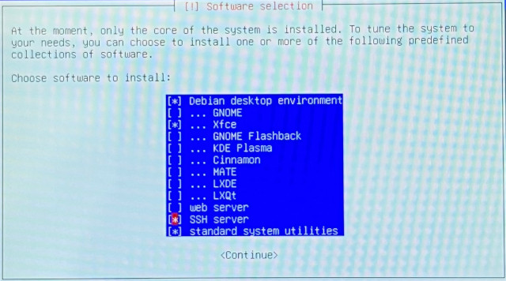
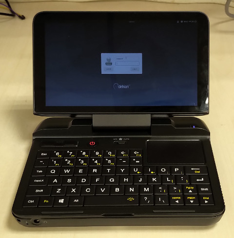

參考資訊：
https://gitlab.com/runout/gpd-micropc
https://github.com/joshskidmore/gpd-micropc-arch-guide
安裝步驟：
1. 下載https://cdimage.debian.org/debian-cd/current/amd64/iso-dvd/debian-10.1.0-amd64-DVD-1.iso並且製作USB開機碟
2. 準備USB鍵盤(因為安裝階段無法使用GPD MicroPC的鍵盤)
3. 開機並且按下F7，選擇從USB開機
4. 手動設定IP
5. 安裝到選擇套件時，記得選擇SSH Server，因為安裝後，開機無畫面，需要SSH登入更新Kernel

$ cd
$ sudo apt install build-essential linux-source bc kmod cpio flex cpio libncurses-dev libelf-dev libssl-dev rsync
$ sudo apt install firmware-linux firmware-iwlwifi firmware-realtek thermald
$ cd /lib/firmware/i915/
$ sudo wget https://git.kernel.org/pub/scm/linux/kernel/git/firmware/linux-firmware.git/tree/i915/bxt_huc_ver01_8_2893.bin
$ sudo wget https://git.kernel.org/pub/scm/linux/kernel/git/firmware/linux-firmware.git/tree/i915/icl_dmc_ver1_07.bin
$ sudo apt install arandr xserver-xorg-video-intel x11-xserver-utils
$ cd ~
$ wget https://github.com/torvalds/linux/archive/v5.3.tar.gz
$ cd linux-5.3
$ cp -a /boot/config-$(uname -r) .config
$ make menuconfig
$ make -j`nproc` bindeb-pkg
No rule to make target 'debian/certs/xxx@debian.org.cert.pem', needed by 'certs/x509_certificate_list'
$ vim .config
# CONFIG_SYSTEM_TRUSTED_KEYS="debian/certs/debian-uefi-certs.pem"
$ dpkg -i ../linux-image-5.3.0_5.3.0-1_amd64.deb
$ sudo vim /etc/default/grub
GRUB_CMDLINE_LINUX_DEFAULT="quiet fbcon=rotate:1"
$ sudo update-grub
$ sudo vim /etc/lightdm/lightdm.conf
[Seat:*]
greeter-setup-script=/etc/lightdm/greeter_setup.sh
$ sudo vim /etc/lightdm/greeter_setup.sh
#!/bin/bash
xrandr -o right
exit 0
$ sudo chmod +x /etc/lightdm/greeter_setup.sh
$ sudo vim /etc/rc.local
#!/bin/sh
echo "30" >/sys/class/backlight/intel_backlight/brightness
exit 0
$ sudo vim /etc/initramfs-tools/modules
battery
$ sudo update-initramfs -u
$ sudo vim /usr/share/pulseaudio/alsa-mixer/paths/analog-output-headphones.conf
[Element Front]
; switch = mute
switch = off
$ sudo reboot
完成
